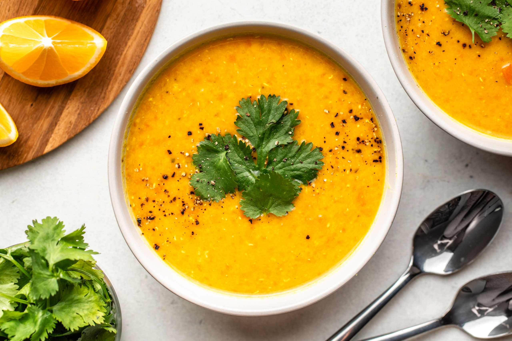

Lentil Soup

A light nutritious soup packed with flavour,spice and delight.
Ingredients
- Carrots, Onion, Garlic: a.k.a the ultimate soup base! Plus they’re affordable, easy to find, pretty shelf-stable, and add a ton of plant-based nutrients.
- Ginger, Turmeric & Lemon: help to bring a bright, zing-y flavor that awakens every tastebud. Even better, they give this feel-good soup its anti-inflammatory benefits.
- Red Lentils: these protein-packed lentils cook down to give the soup a thick and creamy texture – other varieties of lentils don’t break down the same way, so I don’t recommend substitutions here.
Recipe instructions
- onion, carrots, garlic, ginger and turmeric until fragrant
- Add the red lentils to the pot and bring everything to a boil,
- Reduce heat to a simmer, then
- Blend to your desired consistency, stir in lemon juice, and add salt & pepper to taste!
Back to the recipies